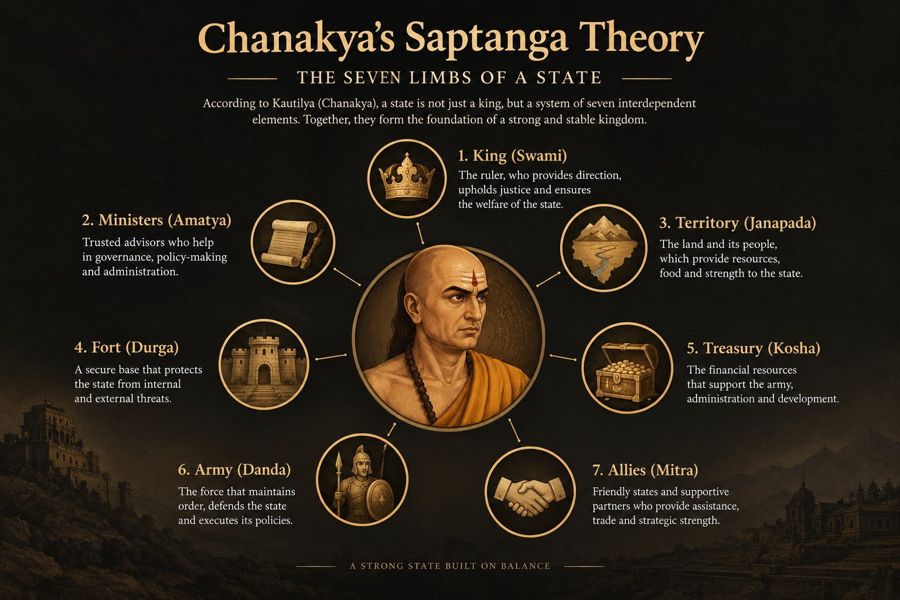

What is the Saptanga theory?

The Saptanga (“seven-limbed”) theory is Kautilya’s account of the constituent elements that make up a functioning state. It is presented at the beginning of Book 6 of the Arthashastra, where Kautilya describes seven constituent elements, or prakritis: the swamin (ruler), amatya (ministers and officials), janapada (territory and population), durga (fortified capital or stronghold), kosa (treasury), danda (coercive power, including the army), and mitra (ally). Rather than treating the state simply as territory governed by a ruler, the theory presents it as a system whose different components depend upon and support one another. Kautilya also discusses the relative condition and importance of these elements in the wider context of political strategy, administration, security, and foreign relations. The term saptanga is widely used in later scholarship and modern discussions of the doctrine, while the Arthashastra itself sets out the seven prakritis as the basic constituents of the state. The doctrine is therefore important for understanding Kautilya’s broader conception of statecraft, in which political strength depends not only on the ruler but on the condition of the institutions, population, territory, defenses, finances, military power, and external alliances that sustain the state.
Its main point is that a state is a system. A capable ruler alone is not enough: he needs able ministers, a productive territory, defensible places, money, force and friends. See the overview on our main Chanakya page for context.
The seven elements of the state
| Element | Meaning | Role in the state | Modern parallel |
|---|---|---|---|
| Swamin | The ruler | Leadership, decisions, example to officials | Head of government |
| Amatya | Ministers and officials | Run administration and carry out policy | Civil service, cabinet |
| Janapada | Territory and population | Source of revenue, produce and manpower | Land, people, economy |
| Durga | Fortified centres | Defence and secure bases | Defence infrastructure |
| Kosha | Treasury | Pays for everything else | Public finances |
| Danda | Army and coercive power | Defence and enforcement of order | Military and police |
| Mitra | Allies | External support | Alliances, partners |
Which element matters most?
Kautilya does not simply treat the seven elements as equal in every circumstance. In his discussion of calamities affecting the constituent elements in Book 8 of the Arthashastra, he sets out a general order of relative importance, arguing that the loss or serious impairment of an earlier element can be more damaging than that of a later one. This places particular importance on the ruler and the administrative apparatus, while also recognizing that the practical consequences depend on the circumstances and on how the different elements interact. The passage therefore should not be read as saying that the treasury, territory, army, or alliances are unimportant; rather, Kautilya is comparing the relative consequences of different kinds of calamity.
More broadly, the seven elements are interconnected rather than independent. A functioning treasury provides the resources needed to maintain administration and military forces; military power helps protect the territory and population; productive territory generates revenue; effective officials help manage these resources; and reliable allies can strengthen the state when its own resources are insufficient. The Saptanga theory therefore describes state strength as a condition of the whole political system, while Kautilya’s discussion of calamities shows that damage to some elements can have wider consequences than damage to others.
Saptanga and the Mandala theory
Saptanga and the Mandala theory are complementary frameworks in Kautilya's political thought: Saptanga explains the internal constitution and strength of a state, while the Mandala theory explains its position and relationships within the wider interstate environment. The Saptanga model looks primarily inward and identifies seven constituent elements of the state: the king (svamin), ministers (amatya), territory and population (janapada), fortified center (durga), treasury (kosa), army or coercive power (danda), and allies (mitra). These elements are not merely abstract parts of a political constitution; their condition and relative strength affect the ruler's ability to govern, defend the realm, collect revenue, maintain order, and pursue foreign policy. The Mandala theory, by contrast, looks outward at the relationships among neighboring rulers and political powers. Kautilya's analysis treats interstate politics as a structured field in which proximity, relative strength, interests, alliances, enmity, and changing circumstances influence the ruler's strategic choices. A ruler therefore cannot determine foreign policy effectively without first considering the actual condition of his own state and the capabilities of the surrounding powers.
The connection between the two theories is therefore practical: internal state capacity provides the foundation from which a ruler can respond to the Mandala of neighboring powers. The Mandala is conventionally represented as a circle of twelve kings or political positions, although Kautilya's treatment is more analytical than a simple fixed map of twelve modern-style countries. The framework distinguishes different positions in relation to the central ruler, including the immediate enemy, the neighboring ruler beyond that enemy, allies, and other powers whose interests may affect the balance of power. In discussions of the Arthashastra, the Mandala is also connected with the constituent elements of the states involved. A conventional calculation identifies seventy-two elements by considering twelve states with six internal elements each, while mitra, the ally, is treated separately as the external element. The important point is not simply the numerical calculation but the way Kautilya links domestic capacity with external strategy: a ruler with a strong treasury, capable administration, secure territory, effective military power, and reliable allies has different strategic options from a ruler whose internal elements are weak. Saptanga and Mandala should therefore be understood together as two levels of Kautilya's statecraft—one explaining the composition and capabilities of a political power and the other explaining how that power operates within a competitive interstate environment.
Saptanga compared with modern definitions of the state
The Saptanga theory is not a direct equivalent of the modern legal definition of statehood, although several of its elements broadly correspond to features recognized in modern theories of the state. The 1933 Montevideo Convention is commonly cited for four criteria of statehood in international law: a permanent population, a defined territory, a government, and the capacity to enter into relations with other states. These criteria primarily address whether an entity possesses the characteristics associated with being a state in international law. Kautilya's Saptanga theory approaches the question from a different perspective. Its seven prakritis are the ruler (svamin), ministers or administration (amatya), territory and population (janapada), fortified strongholds (durga), treasury (kosa), coercive or military power (danda), and allies (mitra). Territory and population overlap broadly with the Montevideo criterion of a permanent population and defined territory, while the ruler and ministers relate to government and the ally reflects the importance Kautilya assigns to external relations. However, Saptanga goes considerably further by treating financial resources, military capacity, fortified centers, administrative competence, and diplomatic support as integral components of a functioning political order.
The key difference is that Montevideo primarily provides criteria for identifying statehood, whereas Saptanga provides a framework for analyzing the condition and capacity of a state. Kautilya is therefore concerned not merely with whether a political entity exists, but with whether its constituent elements are strong enough to maintain order, defend territory, collect resources, govern effectively, and pursue its interests. A political entity could possess a population, territory, and government while nevertheless having a weak treasury, ineffective administration, inadequate defenses, or unreliable alliances. Saptanga draws attention to these differences in internal strength and resilience. It is consequently better understood as a theory of state structure and state capacity rather than as an ancient version of a modern international law test for statehood. The comparison is useful precisely because it reveals two different questions: the modern legal approach asks, in broad terms, what conditions characterize a state?, while Kautilya's approach also asks what constituent elements make a state capable of functioning, surviving, and pursuing its political interests?
Common misunderstandings
“Saptanga is a modern invention.” The theory of seven constituent elements (prakritis) is found in the Arthashastra itself and forms an important part of Kautilya's analysis of the state. The modern shorthand term “Saptanga theory” is a convenient way of referring to this framework, but the underlying idea is not a modern construction. The seven elements are the ruler (svamin), ministers (amatya), territory and population (janapada), fortified center (durga), treasury (kosa), coercive or military power (danda), and ally (mitra).
“It describes an absolute monarchy.” The ruler is the central figure in Kautilya's political theory, but the Arthashastra does not portray effective government as the ruler acting alone. Ministers, advisers, officials, military resources, finances, territory, and alliances all form part of the state's capacity. Kautilya repeatedly emphasizes consultation and practical advice, and he connects the ruler's success with the security and welfare of the subjects. The king's authority is therefore embedded within a larger administrative and political system.
“The seven elements are seven independent parts of a state that simply exist side by side.” Saptanga is better understood as an interconnected model. The condition of one element can affect the strength of others: a weak treasury can undermine military capacity, poor administration can weaken revenue collection, and insecure territory can damage both economic resources and political stability. Kautilya therefore evaluates the quality and strength of the constituent elements, not merely their presence.
“Saptanga is simply a list of seven modern government departments.” The prakritis should not be mapped too literally onto modern ministries or constitutional institutions. Terms such as janapada, durga, and danda belong to a different historical and political context. The theory describes the essential constituents and capacities of an ancient political state, not a modern bureaucratic organizational chart.
“Saptanga and the Mandala theory are the same thing.” They are closely related but answer different questions. Saptanga focuses primarily on the internal constituents and capabilities of a state, whereas the Mandala theory analyzes relationships among neighboring rulers and political powers. A ruler's position in the Mandala cannot be assessed effectively without considering the strength of the state's own constituent elements.
“Saptanga is the same as the modern legal definition of a state.” Kautilya's framework should not be treated as an ancient version of the Montevideo Convention or another modern test of legal statehood. Modern international law asks whether an entity possesses particular conditions associated with statehood, while Saptanga is more concerned with the structure, resources, resilience, and effectiveness of a political state. Its purpose is therefore analytical and political rather than a definition of modern international legal personality.
“Saptanga only concerns military power.” Military and coercive capacity (danda) are important, but they are only one of the seven elements. Kautilya also gives substantial importance to administration, territory and population, fortified centers, financial resources, the ruler, and alliances. A state with a strong army but weak finances, administration, or internal stability would not necessarily be considered strong within the Saptanga framework.
“The seven elements are always equally important.” Kautilya treats the elements as interconnected, but their practical importance can vary according to circumstances. The strength of a state has to be assessed in relation to its particular conditions, resources, threats, and objectives. Saptanga is therefore better understood as a framework for evaluating state capacity than as a rigid formula in which every prakriti must always have exactly the same weight.
Frequently asked questions
What is the Saptanga theory in simple words?
It says a state has seven parts: ruler, ministers, land and people, forts, treasury, army, and allies. All seven must work together for the state to be strong.
Where does Kautilya describe the seven elements?
At the beginning of Book 6 of the Arthashastra, which deals with the sources of sovereign states.
What does danda mean in Saptanga?
In this list danda means the coercive or military power of the state. In law it also means punishment.
How is Saptanga different from Mandala theory?
Saptanga describes the internal makeup of one state. Mandala theory describes relations among several states.
Sources and further reading
- R. P. Kangle, The Kautilya Arthasastra, 3 parts (Bombay: University of Bombay, 1960–65): critical edition, translation, and study.
- Patrick Olivelle, King, Governance, and Law in Ancient India: Kautilya's Arthasastra (Oxford University Press, 2013).
- L. N. Rangarajan, Kautilya: The Arthashastra (Penguin Classics, 1992).
- Roger Boesche, The First Great Political Realist: Kautilya and His Arthashastra (Lexington Books, 2002).
- R. Shamasastry, Kautilya's Arthasastra (Mysore, 1915): early English translation, now in the public domain.
Dating, authorship and translation choices for the Arthashastra are debated; see our editorial policy.
More on Chanakya
This page is one deep dive in our series on Chanakya. Start with the full overview: Chanakya (Kautilya): Life, Arthashastra & Political Thought →